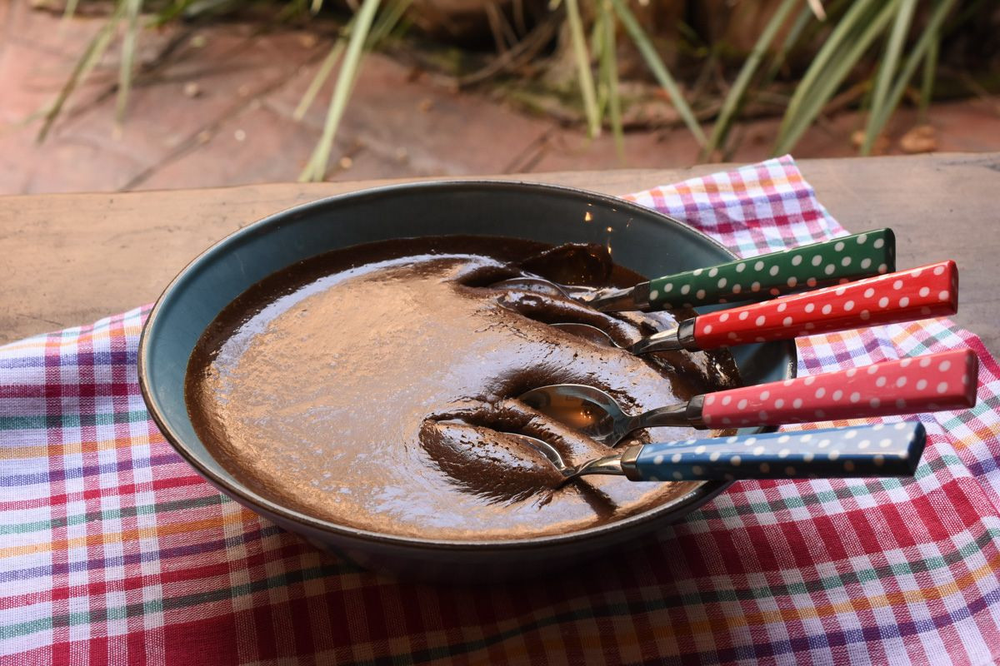

O brigadeiro é um clássico doce brasileiro amado por todos. Com essa receita, você aprenderá a fazer brigadeiros de panela em apenas 30 minutos. Você só precisa dos seguintes ingredientes:
1. Uma lata de leite condensado
2. 100ml de creme de leite
3. Três colheres de sopa de chocolate em pó
Após separar todos os ingredientes, adicione o leite condensado na panela.
Depois, adicione o creme de leite e o chocolate em pó.
Em seguida, misture até ficar homogêneo e leve ao fogo baixo.
Continue misturando até o brigadeiro começar a desgrudar do fundo da panela.
Voilà! O brigadeiro está pronto. Aproveite!